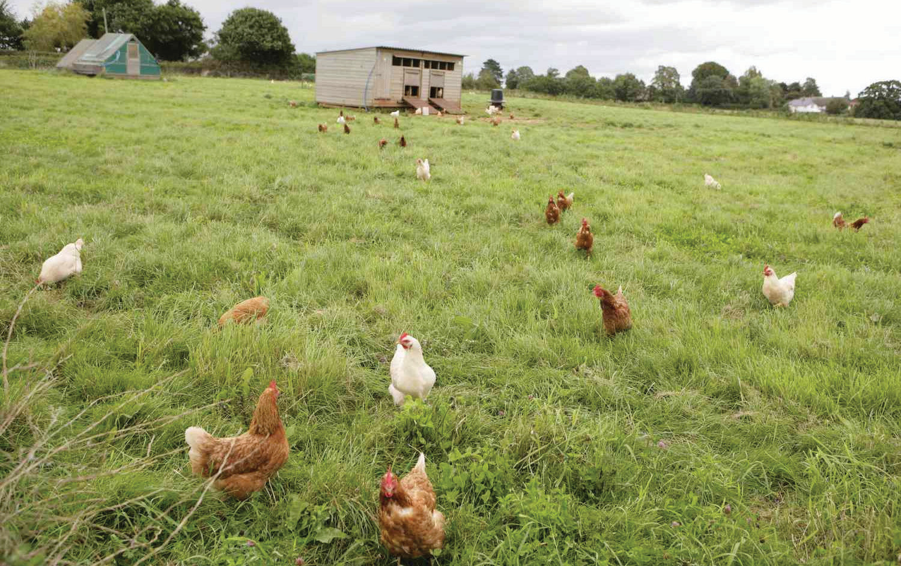

system is suitable only where adequate land is available to ensure desired stocking density and to avoid overcrowding. Fields or parts of fields or plots can be kept free from crops to allow birds to move freely from one plot to another in search of food. Nearly 250 adult birds per hectare can be reared using this system. Figure 9.2 shows an example of the free-range system of poultry production.

A free-range system of poultry production is preferred for small-scale organic production of poultry meat and eggs. With this system, housing costs and capital investment are low. However, losses due to predatory animals can be high, wild birds may bring diseases unless proper care is taken, and scientific management practices may not be easily adopted.
To take care of poultry in a free-range system, it is recommended to do the following:
Secure night housing for the chicken. The house is best built off the ground on slats to allow good ventilation and cooling;
Supplementary feeding in the evening is to be given to the chicken when they return to the house, for example, grains;
Laying birds must be provided with clean, dry dark places (nests) to lay their eggs. There should be a ratio of one nest for five birds in the house and the dry